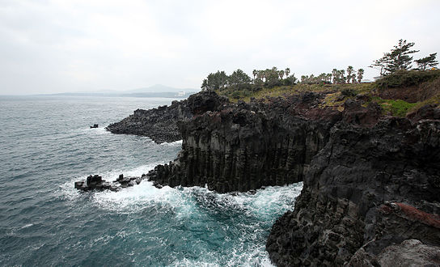

제주도 자연 관광지

성산 일출봉
성산일출봉은 제주도의 다른 오름들과는 달리 마그마가 물속에서 분출하면서 만들어진 수성화산체다.
화산활동시 분출된 뜨거운 마그마가 차가운 바닷물과 만나면서 화산재가 습기를 많이 머금어 끈끈한 성질을 띄게 되었고, 이것이 층을 이루면서 쌓인 것이 성산일출봉이다.
바다 근처의 퇴적층은 파도와 해류에 의해 침식되면서 지금처럼 경사가 가파른 모습을 띄게 되었다.
생성 당시엔 제주 본토와 떨어진 섬이었는데, 주변에 모래와 자갈등이 쌓이면서 간조 때면 본토와 이어지는 길이 생겼고, 1940년엔 이곳에 도로가 생기면서 현재는 육지와 완벽하게 연결되어 있다.
지도 보기
천지연 폭포
서귀포는 다른 지역에 용천수가 많이 솟고, 지하층에 물이 잘 스며들지 않는 수성응회암이 널리 분포하여 다른 지역보다 상대적으로 폭포가 많다.
그런 서귀포 폭포 중에서 규모나 경관 면에서 단연 으뜸으로 관광객의 발길이 머무는 곳이 바로 천지연 폭포 이다.
천지연 폭포 서남쪽에는 구실잣밤나무, 동백나무 등 상록수와 난종류가 울창하게 우거져 난대림을 이루는데, 한여름에도 시원하며, 현무암으로 산책로가 잘 조성되어 있어 남녀노소 모두 편안히 자연을 감상하며 걸을 수 있다.
산책로 끝에 위치한 천지연폭포는 오후 10시까지 야간개장을 하는데, 밤에 보는 폭포의 모습도 장관이다.
지도 보기

섭지코지
제주 동부해안에 볼록 튀어나온 섭지코지는 성산 일출봉을 배경으로한 해안풍경이 일품이다.
들머리의 신양해변백사장, 끝머리 언덕위 평원에 드리워진 유채밭, 여유롭게 풀을 뜯는 제주조랑말들, 바위로 둘러친 해안절벽과 우뚝 치솟은 전설어린 선바위 등은 전형적인 제주의 아름다움을 만날 수 있다.
특히 제주의 다른 해안과는 달리 송이라는 붉은 화산재로 되어 있고, 밀물과 썰물에 따라 물속에 잠겼다가 일어서는 기암괴석들은 어디에서도 볼 수 없는 자연의 수석전시회를 연출한다.
지도 보기
한라산 국립공원
신생대 제4기의 젊은 화산섬인 한라산은 지금으로부터 2만 5천년 전까지 화산분화 활동을 하였으며, 한라산 주변에는 360여 개의 오름들이 분포되어 있어 특이한 경관을 창출하고 있다.
섬 중앙에 우뚝 솟은 한라산의 웅장한 자태는 자애로우면서도 강인한 기상을 가슴에 품고 있는 듯하다.
천자만홍에 덮인 가을의 만산홍엽은 빼놓을 수 없는 경관이며, 유독 눈 속에 잠긴 설경의 한라는 절경 중의 절경으로 꼽힌다.
철 따라 어김없이 바뀌는 형형색색의 자연경관은 찾는 이로 하여금 절로 탄성을 자아내게 한다.
지도 보기

우도
우도는 소가 누워있는 모양을 닮았다고 해서 일찍부터 소섬 또는 쉐섬으로 불리웠다. 완만한 경사와 옥토, 풍부한 어장, 우도팔경 등 천혜의 자연조건을 갖춘 관광지로써 한해 약 200만 명의 관광객이 찾는 제주의 대표적인 부속섬이다.
우도를 찾는 관광객은 홍조단괴해변, 우도봉, 검멀레 해변을 주로 찾는다.
홍조단괴해변은 산호해변으로도 불렸는데, 백사장을 이룬 하얀 알갱이가 산호가 아닌 홍조류가 딱딱하게 굳어 알갱이처럼 부서지면서 만들어진 것이 밝혀지면서 홍조단괴해변으로 부르며, 홍조류로 이뤄진 백사장은 세계에서 드물어 보호하고 있다.
너른 백사장과 아름다운 바다색으로 유명한 하고수동해수욕장이 있고,
경사가 완만한 천진동 코스와 경치가 멋진검멀레 해안코스가 있으며,
우도봉에 올라 우도의 전경을 바라볼 수도 있다.
자연 절경 이외에도 바다낚시, 자전거 하이킹, 잠수함과 유람선 등을 통해 여행의 재미를 더하고 있다.
지도 보기
사려니숲길
사려니숲길은 제주의 숨은 비경 31곳 중 하나로, 비자림로를 시작으로 물찻오름과 사려니 오름을 거쳐가는 삼나무가 우거진 숲길이다.
사려니오름까지 이어지는 숲길이기 때문에 사려니숲길이라고 불린다.
사려니숲길은 본래 숲의 모습이 많이 훼손되지 않아 트래킹을 좋아하는 여행자들이 즐겨 찾는다.
사려니숲길을 걷다가 위를 올려다보면 하늘을 향해 시원하게 쭉쭉 뻗은 삼나무가 그늘을 만들어주고 그 사이로 햇살이 비춘다.
여름에는 제아무리 무더운 날에도 숲길 사이로 부는 시원한 바람을 느낄 수 있다.
제주에서 청정한 공기를 마시며 몸과 마음을 치유받고 싶다면 방문하기 좋다.
지도 보기

주상절리대
주상절리는 마치 예리한 조각칼로 섬세하게 깎아낸 듯한 4~6각형 형태의 기둥으로, 현무암질 용암류에 나타나는 수직절리를 말한다.
두꺼운 용암이 화구로부터 흘러나와 급격히 식으면서 발생하는 수축작용의 결과로 형성되었다.
마치 계단을 쌓은 듯 겹겹이 서 있는 육모꼴의 돌기둥이 병풍처럼 둘러쳐져 있어 자연의 신비로움을 만끽할 수 있다.
그 기둥에 부딪히는 파도 또한 마음을 뺏기는 볼거리인데, 심할 때는 높이 20m 이상 치솟는 ‘쇼’가 펼쳐지기도 해서 보는이의 넋을 빼앗는다.
지도 보기